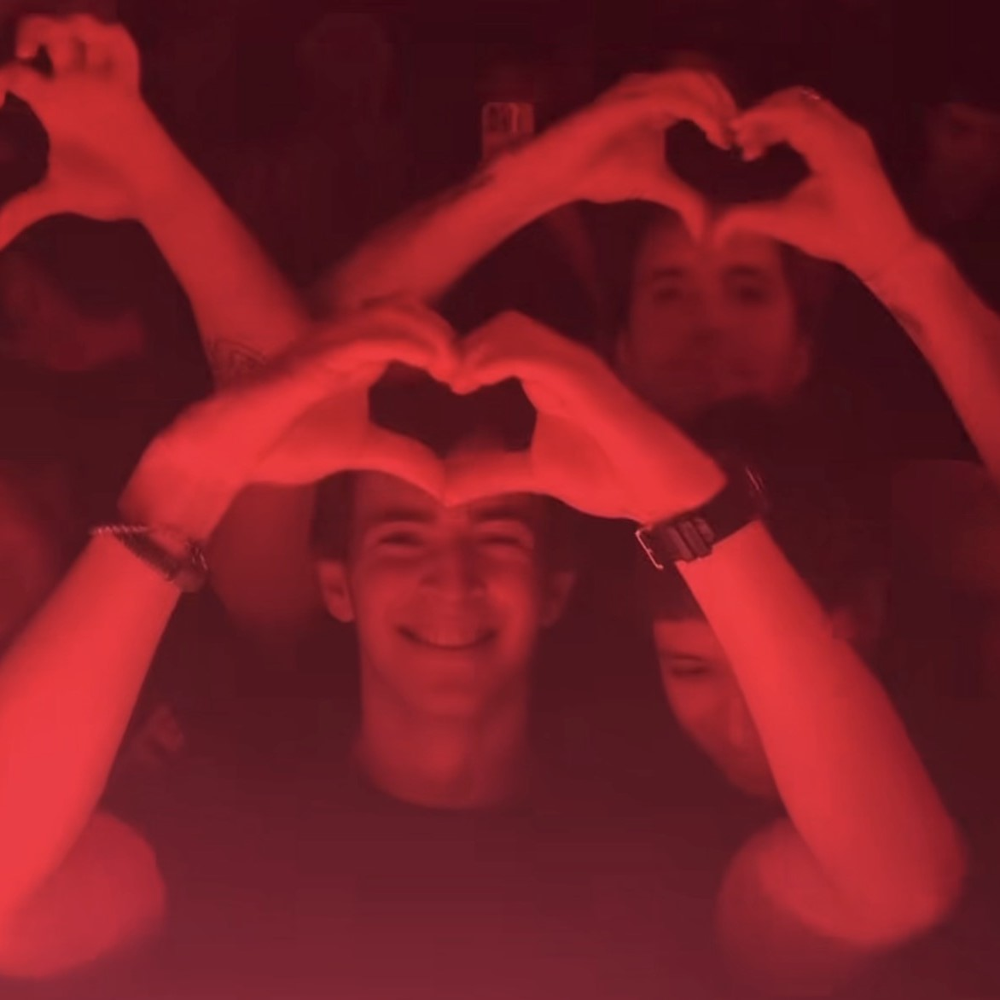

Un poco sobre el autor
El por qué del Blog
Hace ya casi 2 años me mudé a la capital del país para poder continuar con mi trayectoria academica. El ruido de la ciudad, la gente, el peso de las responsabilidades, fue un cambio rotundo. Pasaron los días, los fines de semana, los examenes, y con mis amigos que compartian mi situacion solo teniamos 1 pregunta; "¿Qué hacemos hoy?". Al no encontrar una respuesta, tuve esta iniciativa para ayudar y "guiar" a aquellos que están en el lugar donde supe estar yo.
Más sobre mí
Nací un 15 de Diciembre del 2005, en la localidad de Moreno, Provincia de Buenos Aires. A los 2 años me alejé un poco más de la ciudad y me mudé a Luján, lugar donde crecí. Es un lugar que siempre voy a considerar mi casa, con su ritmo tranquilo, sus paisajes y la gente que conozco y aprecio desde chico.
Ahora, me encuentro viviendo en Belgrano, pero regreso todos los viernes a Luján. Lo hago para reencontrarme con mi familia, mis amigos y los lugares de siempre. Ese equilibrio entre la ciudad y el regreso a mi lugar favorito en el mundo, siento que define gran parte de quién soy.